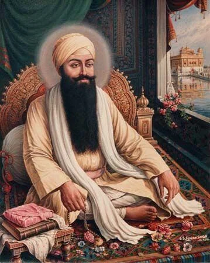
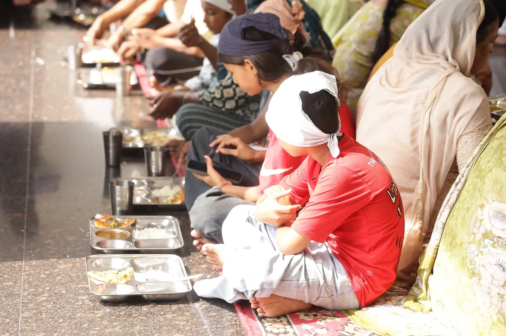
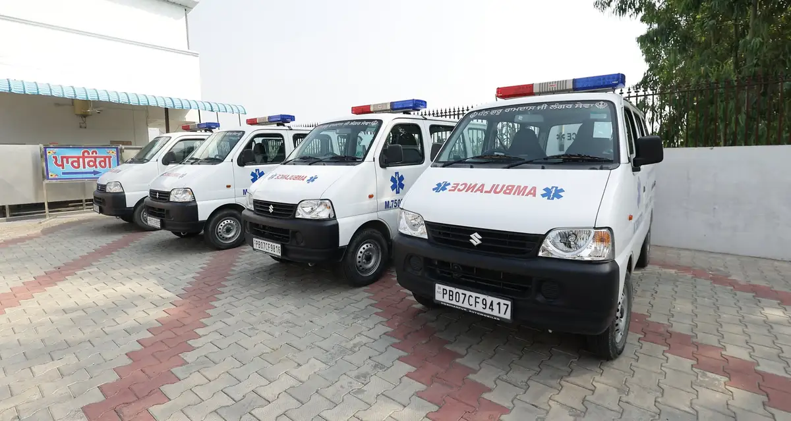
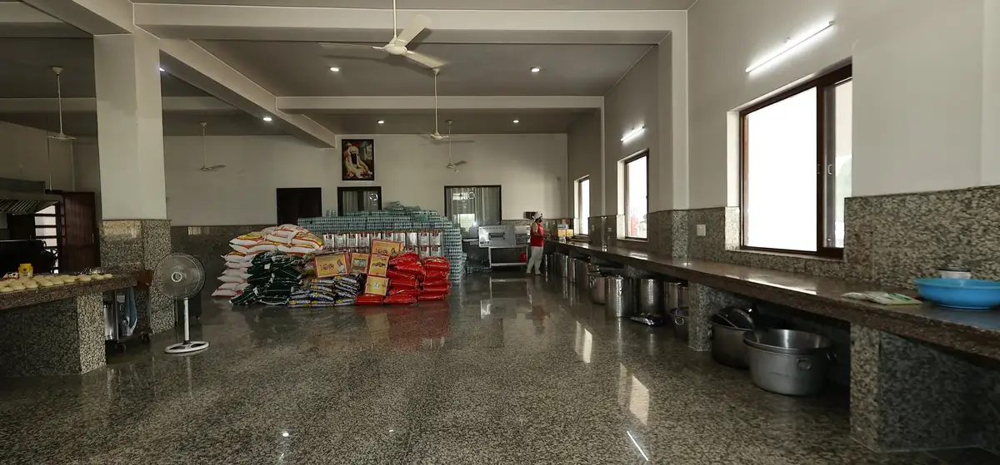
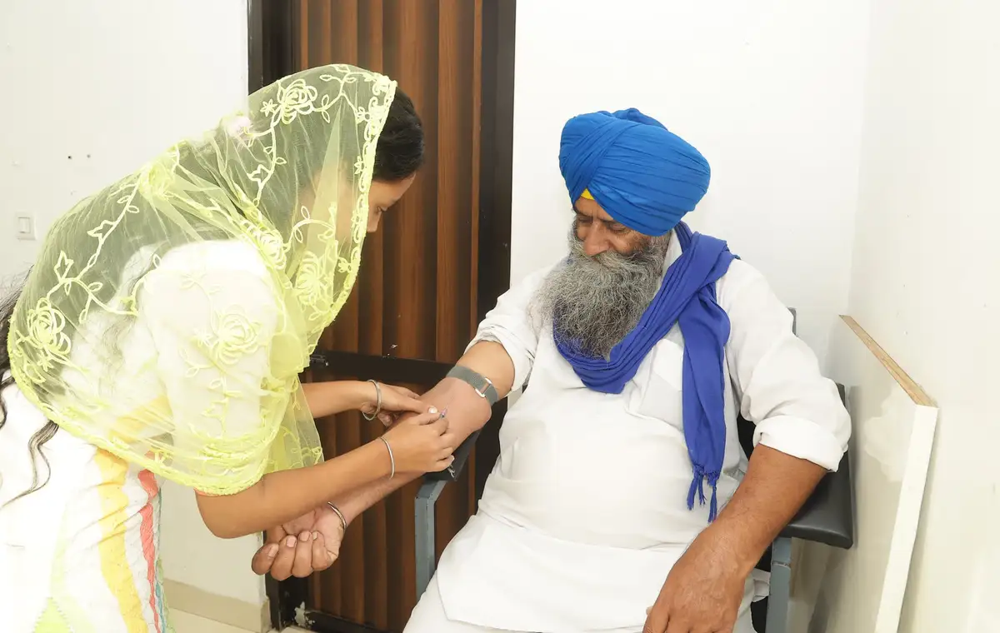
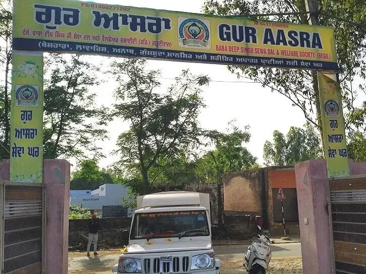
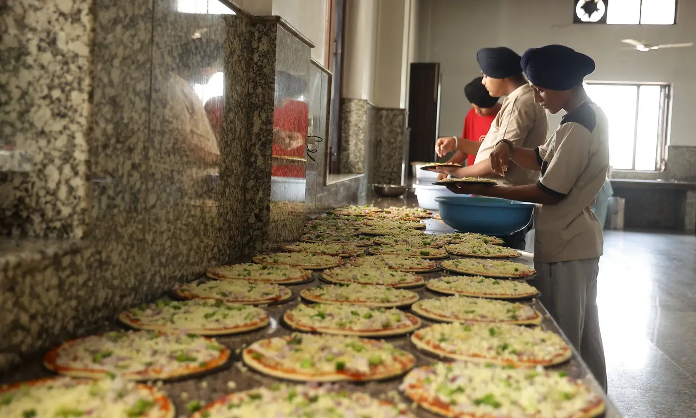
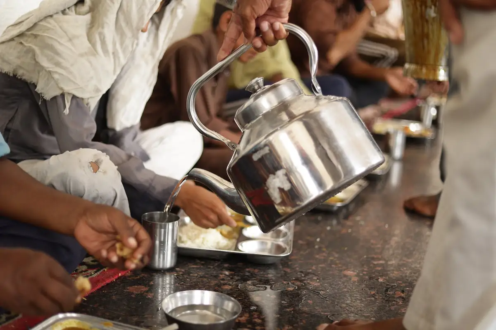
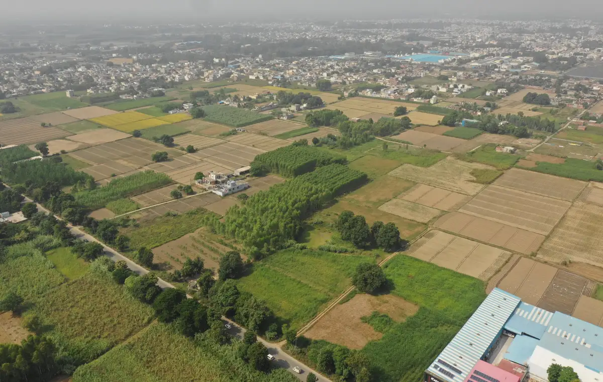

Serving Punjab since 20192019 ਤੋਂ ਪੰਜਾਬ ਦੀ ਸੇਵਾ ਵਿੱਚ
Langar First.ਲੰਗਰ ਪਹਿਲਾਂ।
Every day, fresh Langar from our kitchens in Pur Heeran and Madhir reaches patients, families and students across Punjab — with healthcare and community support beyond the meal.ਹਰ ਰੋਜ਼ ਪੁਰਹੀਰਾਂ ਅਤੇ ਮਧੀਰ ਦੀਆਂ ਸਾਡੀਆਂ ਰਸੋਈਆਂ ਤੋਂ ਤਾਜ਼ਾ ਲੰਗਰ ਪੰਜਾਬ ਭਰ ਦੇ ਮਰੀਜ਼ਾਂ, ਪਰਿਵਾਰਾਂ ਅਤੇ ਵਿਦਿਆਰਥੀਆਂ ਤੱਕ ਪਹੁੰਚਦਾ ਹੈ — ਨਾਲ ਹੀ ਸਿਹਤ ਸੇਵਾ ਅਤੇ ਭਾਈਚਾਰਕ ਮਦਦ ਵੀ।
The sewa, measured in people.ਸੇਵਾ, ਲੋਕਾਂ ਦੀ ਗਿਣਤੀ ਵਿੱਚ।
Every figure is a person fed, a patient seen or a family supported — counted the same way, every day.ਹਰ ਅੰਕੜਾ ਇੱਕ ਇਨਸਾਨ ਹੈ ਜਿਸਨੇ ਲੰਗਰ ਛਕਿਆ, ਇੱਕ ਮਰੀਜ਼ ਜਿਸਦੀ ਜਾਂਚ ਹੋਈ, ਜਾਂ ਇੱਕ ਪਰਿਵਾਰ ਜਿਸਦੀ ਮਦਦ ਹੋਈ — ਹਰ ਰੋਜ਼ ਇੱਕੋ ਤਰੀਕੇ ਨਾਲ ਗਿਣਿਆ।
Every dayਹਰ ਰੋਜ਼
~100,000
meals servedਪਲੇਟਾਂ ਲੰਗਰ
Across 31 hospitals, a school, a care home and city service points31 ਹਸਪਤਾਲਾਂ, ਇੱਕ ਸਕੂਲ, ਇੱਕ ਆਸਰਾ ਘਰ ਅਤੇ ਸ਼ਹਿਰ ਦੇ ਸੇਵਾ ਸਥਾਨਾਂ ਵਿੱਚ
250–300
free clinic visitsਮੁਫ਼ਤ ਕਲੀਨਿਕ ਵਿੱਚ ਮਰੀਜ਼
~250
students fed at Ajjowalਅੱਜੋਵਾਲ ਵਿੱਚ ਵਿਦਿਆਰਥੀਆਂ ਨੂੰ ਭੋਜਨ
Dhan Guru Ramdas Langar Sewa is rooted in the Sikh tradition of Langar: nourishment offered with equality, dignity and devotion. Our mission is to ensure no individual lacks access to adequate nutrition in Punjab.ਧੰਨ ਗੁਰੂ ਰਾਮਦਾਸ ਲੰਗਰ ਸੇਵਾ ਲੰਗਰ ਦੀ ਸਿੱਖ ਪਰੰਪਰਾ ਵਿੱਚ ਜੜ੍ਹੀ ਹੈ: ਬਰਾਬਰੀ, ਸਤਿਕਾਰ ਅਤੇ ਸ਼ਰਧਾ ਨਾਲ ਭੋਜਨ ਦੀ ਸੇਵਾ। ਸਾਡਾ ਮਿਸ਼ਨ ਹੈ ਕਿ ਪੰਜਾਬ ਵਿੱਚ ਕੋਈ ਵੀ ਵਿਅਕਤੀ ਪੌਸ਼ਟਿਕ ਭੋਜਨ ਤੋਂ ਵਾਂਝਾ ਨਾ ਰਹੇ।

Sri Guru Ram Das Jiਸ੍ਰੀ ਗੁਰੂ ਰਾਮਦਾਸ ਜੀ
Our journeyਸਾਡਾ ਸਫ਼ਰ
How we got here, and where we’re going.ਅਸੀਂ ਇੱਥੇ ਕਿਵੇਂ ਪਹੁੰਚੇ, ਅਤੇ ਅੱਗੇ ਕਿੱਥੇ ਜਾ ਰਹੇ ਹਾਂ।
Each step grew from a real need — first in hospitals, then wherever people were going without.ਹਰ ਕਦਮ ਇੱਕ ਅਸਲ ਲੋੜ ਵਿੱਚੋਂ ਨਿਕਲਿਆ — ਪਹਿਲਾਂ ਹਸਪਤਾਲਾਂ ਵਿੱਚ, ਫਿਰ ਜਿੱਥੇ ਵੀ ਲੋਕ ਭੁੱਖੇ ਸਨ।
The first Langar reaches civil hospitalsਪਹਿਲਾ ਲੰਗਰ ਸਿਵਲ ਹਸਪਤਾਲਾਂ ਵਿੱਚ ਪਹੁੰਚਿਆ
Hoshiarpur, Jalandhar, Phagwara and Nawanshahr — where patients and families had little access to affordable, nutritious food.ਹੁਸ਼ਿਆਰਪੁਰ, ਜਲੰਧਰ, ਫਗਵਾੜਾ ਅਤੇ ਨਵਾਂਸ਼ਹਿਰ — ਜਿੱਥੇ ਮਰੀਜ਼ਾਂ ਅਤੇ ਪਰਿਵਾਰਾਂ ਲਈ ਸਸਤਾ, ਪੌਸ਼ਟਿਕ ਭੋਜਨ ਮਿਲਣਾ ਔਖਾ ਸੀ।
Apr 2019ਅਪ੍ਰੈਲ 2019
A school and a care homeਇੱਕ ਸਕੂਲ ਅਤੇ ਇੱਕ ਆਸਰਾ ਘਰ
Students at Government Elementary School, Ajjowal and residents of Gur Aasra, Gardiwal begin receiving daily meals.ਸਰਕਾਰੀ ਐਲੀਮੈਂਟਰੀ ਸਕੂਲ ਅੱਜੋਵਾਲ ਦੇ ਵਿਦਿਆਰਥੀਆਂ ਅਤੇ ਗੁਰ ਆਸਰਾ ਗੜ੍ਹਦੀਵਾਲਾ ਦੇ ਨਿਵਾਸੀਆਂ ਨੂੰ ਰੋਜ਼ਾਨਾ ਭੋਜਨ ਮਿਲਣਾ ਸ਼ੁਰੂ ਹੋਇਆ।
Oct 2019ਅਕਤੂਬਰ 2019
Reaching Amritsarਅੰਮ੍ਰਿਤਸਰ ਤੱਕ ਪਹੁੰਚ
Guru Nanak Dev Hospital, the Amritsar bus stand and the railway station.ਗੁਰੂ ਨਾਨਕ ਦੇਵ ਹਸਪਤਾਲ, ਅੰਮ੍ਰਿਤਸਰ ਬੱਸ ਅੱਡਾ ਅਤੇ ਰੇਲਵੇ ਸਟੇਸ਼ਨ।
2020
COVID-19ਕੋਵਿਡ-19
Food support across much of Punjab, including remote hill and forest areas.ਪੰਜਾਬ ਦੇ ਵੱਡੇ ਹਿੱਸੇ ਵਿੱਚ ਖਾਣੇ ਦੀ ਮਦਦ, ਦੂਰ-ਦਰਾਡੇ ਪਹਾੜੀ ਅਤੇ ਜੰਗਲੀ ਇਲਾਕਿਆਂ ਸਮੇਤ।
Reliefਰਾਹਤ
Floods and Shambhu borderਹੜ੍ਹ ਅਤੇ ਸ਼ੰਭੂ ਬਾਰਡਰ
Relief delivered by boat where roads could not reach; Pizza Langar for about a year at Shambhu border.ਜਿੱਥੇ ਸੜਕਾਂ ਨਹੀਂ ਪਹੁੰਚੀਆਂ, ਉੱਥੇ ਕਿਸ਼ਤੀਆਂ ਰਾਹੀਂ ਰਾਹਤ; ਸ਼ੰਭੂ ਬਾਰਡਰ 'ਤੇ ਲਗਭਗ ਇੱਕ ਸਾਲ ਪੀਜ਼ਾ ਲੰਗਰ।
Todayਅੱਜ
31 hospitals and growing31 ਹਸਪਤਾਲ ਅਤੇ ਵਧ ਰਹੇ ਹਾਂ
A free clinic, five ambulances, school nutrition, monthly ration and medical camps.ਮੁਫ਼ਤ ਕਲੀਨਿਕ, ਪੰਜ ਐਂਬੂਲੈਂਸਾਂ, ਸਕੂਲ ਵਿੱਚ ਭੋਜਨ, ਮਹੀਨਾਵਾਰ ਰਾਸ਼ਨ ਅਤੇ ਮੈਡੀਕਲ ਕੈਂਪ।
Oct 2034ਅਕਤੂਬਰ 2034
A charitable hospitalਇੱਕ ਚੈਰੀਟੇਬਲ ਹਸਪਤਾਲ
Groundbreaking planned for the 550th birth anniversary of Sri Guru Ram Das Ji.ਸ੍ਰੀ ਗੁਰੂ ਰਾਮਦਾਸ ਜੀ ਦੇ 550ਵੇਂ ਪ੍ਰਕਾਸ਼ ਪੁਰਬ 'ਤੇ ਨੀਂਹ ਰੱਖਣ ਦੀ ਯੋਜਨਾ।
The tradition of Langarਲੰਗਰ ਦੀ ਪਰੰਪਰਾ
One kitchen. Every person. No distinction.ਇੱਕ ਰਸੋਈ। ਹਰ ਇਨਸਾਨ। ਕੋਈ ਭੇਦਭਾਵ ਨਹੀਂ।
Langar is a community kitchen where anyone — regardless of caste, religion, ethnicity or economic status — is served a free meal. It embodies equality and the oneness of all humanity.ਲੰਗਰ ਇੱਕ ਸਾਂਝੀ ਰਸੋਈ ਹੈ ਜਿੱਥੇ ਹਰ ਕਿਸੇ ਨੂੰ — ਜਾਤ, ਧਰਮ, ਨਸਲ ਜਾਂ ਆਰਥਿਕ ਹਾਲਤ ਦੇ ਭੇਦ ਤੋਂ ਬਿਨਾਂ — ਮੁਫ਼ਤ ਭੋਜਨ ਛਕਾਇਆ ਜਾਂਦਾ ਹੈ। ਇਹ ਬਰਾਬਰੀ ਅਤੇ ਸਾਰੀ ਮਨੁੱਖਤਾ ਦੀ ਏਕਤਾ ਦਾ ਪ੍ਰਤੀਕ ਹੈ।
Equalityਬਰਾਬਰੀ
Langar is served without distinction. Every person is welcomed with dignity.ਲੰਗਰ ਬਿਨਾਂ ਭੇਦਭਾਵ ਵਰਤਾਇਆ ਜਾਂਦਾ ਹੈ। ਹਰ ਇਨਸਾਨ ਦਾ ਸਤਿਕਾਰ ਨਾਲ ਸਵਾਗਤ ਹੁੰਦਾ ਹੈ।
Consistencyਨਿਰੰਤਰਤਾ
Daily preparation, fixed schedules and dedicated routes make service dependable.ਰੋਜ਼ਾਨਾ ਤਿਆਰੀ, ਪੱਕਾ ਸਮਾਂ ਅਤੇ ਤੈਅ ਰਸਤੇ ਸੇਵਾ ਨੂੰ ਭਰੋਸੇਯੋਗ ਬਣਾਉਂਦੇ ਹਨ।
Stewardshipਜ਼ਿੰਮੇਵਾਰੀ
Food quality, hygiene, vehicles and equipment are treated as responsibilities of sewa.ਭੋਜਨ ਦੀ ਗੁਣਵੱਤਾ, ਸਫ਼ਾਈ, ਗੱਡੀਆਂ ਅਤੇ ਸਾਜ਼ੋ-ਸਮਾਨ ਨੂੰ ਸੇਵਾ ਦੀ ਜ਼ਿੰਮੇਵਾਰੀ ਸਮਝਿਆ ਜਾਂਦਾ ਹੈ।
Growthਵਿਕਾਸ
New programs are built around real needs, while Langar remains the foundation.ਨਵੇਂ ਪ੍ਰੋਗਰਾਮ ਅਸਲ ਲੋੜਾਂ ਅਨੁਸਾਰ ਬਣਦੇ ਹਨ, ਜਦਕਿ ਲੰਗਰ ਹਮੇਸ਼ਾ ਨੀਂਹ ਰਹਿੰਦਾ ਹੈ।
Our kitchensਸਾਡੀਆਂ ਰਸੋਈਆਂ
Two kitchens, one daily commitment.ਦੋ ਰਸੋਈਆਂ, ਇੱਕ ਰੋਜ਼ਾਨਾ ਵਚਨਬੱਧਤਾ।
5 photos5 ਤਸਵੀਰਾਂ
Pur Heeran, Hoshiarpurਪੁਰਹੀਰਾਂ, ਹੁਸ਼ਿਆਰਪੁਰ
Our main kitchen prepares about 65,000 meals a day, with roti machines, dough and biscuit equipment and commercial cooking utensils.ਸਾਡੀ ਮੁੱਖ ਰਸੋਈ ਰੋਟੀ ਮਸ਼ੀਨਾਂ, ਆਟਾ ਅਤੇ ਬਿਸਕੁਟ ਮਸ਼ੀਨਾਂ ਅਤੇ ਵੱਡੇ ਭਾਂਡਿਆਂ ਨਾਲ ਹਰ ਰੋਜ਼ ਲਗਭਗ 65,000 ਪਲੇਟਾਂ ਲੰਗਰ ਤਿਆਰ ਕਰਦੀ ਹੈ।
5 photos5 ਤਸਵੀਰਾਂ
Madhir, Sri Muktsar Sahibਮਧੀਰ, ਸ੍ਰੀ ਮੁਕਤਸਰ ਸਾਹਿਬ
Prepares about 35,000 meals a day for hospitals in the south-west of Punjab.ਪੰਜਾਬ ਦੇ ਦੱਖਣ-ਪੱਛਮੀ ਹਿੱਸੇ ਦੇ ਹਸਪਤਾਲਾਂ ਲਈ ਹਰ ਰੋਜ਼ ਲਗਭਗ 35,000 ਪਲੇਟਾਂ ਤਿਆਰ ਕਰਦੀ ਹੈ।
An open invitationਖੁੱਲ੍ਹਾ ਸੱਦਾ
Come see the sewa for yourself.ਆਓ, ਸੇਵਾ ਆਪਣੀਆਂ ਅੱਖਾਂ ਨਾਲ ਦੇਖੋ।
Visit our kitchen in Pur Heeran and see the preparation, the hygiene and the people behind every meal.ਪੁਰਹੀਰਾਂ ਵਿੱਚ ਸਾਡੀ ਰਸੋਈ ਦੇਖਣ ਆਓ — ਤਿਆਰੀ, ਸਫ਼ਾਈ ਅਤੇ ਹਰ ਪਲੇਟ ਪਿੱਛੇ ਦੇ ਸੇਵਾਦਾਰ।
Daily Langar at hospitals is the foundation. Around it, a growing network supports healthcare, education, emergency response and community needs.ਹਸਪਤਾਲਾਂ ਵਿੱਚ ਰੋਜ਼ਾਨਾ ਲੰਗਰ ਸਾਡੀ ਨੀਂਹ ਹੈ। ਇਸਦੇ ਆਲੇ-ਦੁਆਲੇ ਵਧਦਾ ਨੈੱਟਵਰਕ ਸਿਹਤ, ਸਿੱਖਿਆ, ਐਮਰਜੈਂਸੀ ਅਤੇ ਭਾਈਚਾਰਕ ਲੋੜਾਂ ਵਿੱਚ ਮਦਦ ਕਰਦਾ ਹੈ।
Daily Langarਰੋਜ਼ਾਨਾ ਲੰਗਰ
Two kitchens. One daily commitment.ਦੋ ਰਸੋਈਆਂ। ਇੱਕ ਰੋਜ਼ਾਨਾ ਵਚਨਬੱਧਤਾ।
About 100,000 meals are served every day: about 65,000 prepared at Pur Heeran, Hoshiarpur and 35,000 at Madhir, Sri Muktsar Sahib.ਹਰ ਰੋਜ਼ ਲਗਭਗ 1,00,000 ਪਲੇਟਾਂ ਲੰਗਰ ਵਰਤਾਇਆ ਜਾਂਦਾ ਹੈ: ਲਗਭਗ 65,000 ਪੁਰਹੀਰਾਂ, ਹੁਸ਼ਿਆਰਪੁਰ ਵਿੱਚ ਅਤੇ 35,000 ਮਧੀਰ, ਸ੍ਰੀ ਮੁਕਤਸਰ ਸਾਹਿਬ ਵਿੱਚ ਤਿਆਰ ਹੁੰਦਾ ਹੈ।
01
Sourceਸਮੱਗਰੀ
Organic vegetables and pesticide-free wheat.ਜੈਵਿਕ ਸਬਜ਼ੀਆਂ ਅਤੇ ਬਿਨਾਂ ਕੀਟਨਾਸ਼ਕ ਕਣਕ।
02
Prepareਤਿਆਰੀ
Roti machines and commercial kitchens at Pur Heeran and Madhir.ਪੁਰਹੀਰਾਂ ਅਤੇ ਮਧੀਰ ਵਿੱਚ ਰੋਟੀ ਮਸ਼ੀਨਾਂ ਅਤੇ ਵੱਡੀਆਂ ਰਸੋਈਆਂ।
03
Deliverਪਹੁੰਚਾਉਣਾ
About 30 vehicles on fixed daily routes, plus a ration truck between kitchens.ਲਗਭਗ 30 ਗੱਡੀਆਂ ਤੈਅ ਰੋਜ਼ਾਨਾ ਰਸਤਿਆਂ 'ਤੇ, ਨਾਲ ਰਸੋਈਆਂ ਵਿਚਕਾਰ ਇੱਕ ਰਾਸ਼ਨ ਟਰੱਕ।
04
Serveਵਰਤਾਉਣਾ
Two meals plus tea and biscuits, 10:00 AM – 4:00 PM.ਦੋ ਵੇਲੇ ਦਾ ਲੰਗਰ ਨਾਲ ਚਾਹ ਤੇ ਬਿਸਕੁਟ, ਸਵੇਰੇ 10:00 ਤੋਂ ਸ਼ਾਮ 4:00 ਵਜੇ ਤੱਕ।
Free laboratory tests and medicines — about 250–300 patient visits each day.ਮੁਫ਼ਤ ਲੈਬ ਟੈਸਟ ਅਤੇ ਦਵਾਈਆਂ — ਹਰ ਰੋਜ਼ ਲਗਭਗ 250–300 ਮਰੀਜ਼।

School Nutritionਸਕੂਲ ਵਿੱਚ ਭੋਜਨ
Daily milk, biscuits and lunch for about 250 students at Government Elementary School, Ajjowal.ਸਰਕਾਰੀ ਐਲੀਮੈਂਟਰੀ ਸਕੂਲ ਅੱਜੋਵਾਲ ਦੇ ਲਗਭਗ 250 ਵਿਦਿਆਰਥੀਆਂ ਲਈ ਰੋਜ਼ਾਨਾ ਦੁੱਧ, ਬਿਸਕੁਟ ਅਤੇ ਦੁਪਹਿਰ ਦਾ ਖਾਣਾ।

Ambulance Serviceਐਂਬੂਲੈਂਸ ਸੇਵਾ
Five ambulances: four based in Hoshiarpur and one in Madhir. Ambulance Sewa:ਪੰਜ ਐਂਬੂਲੈਂਸਾਂ: ਚਾਰ ਹੁਸ਼ਿਆਰਪੁਰ ਵਿੱਚ ਅਤੇ ਇੱਕ ਮਧੀਰ ਵਿੱਚ। ਐਂਬੂਲੈਂਸ ਸੇਵਾ:+91 75088 77717.

Monthly Rationਮਹੀਨਾਵਾਰ ਰਾਸ਼ਨ
Essential ration for about 200 people or families each month.ਹਰ ਮਹੀਨੇ ਲਗਭਗ 200 ਲੋਕਾਂ ਜਾਂ ਪਰਿਵਾਰਾਂ ਲਈ ਜ਼ਰੂਰੀ ਰਾਸ਼ਨ।

Eye & Blood Donation Campsਅੱਖਾਂ ਅਤੇ ਖ਼ੂਨਦਾਨ ਕੈਂਪ
Two eye camps each year and blood donation camps every October.ਹਰ ਸਾਲ ਅੱਖਾਂ ਦੇ ਦੋ ਕੈਂਪ ਅਤੇ ਹਰ ਅਕਤੂਬਰ ਖ਼ੂਨਦਾਨ ਕੈਂਪ।

Education & Family Supportਸਿੱਖਿਆ ਅਤੇ ਪਰਿਵਾਰਕ ਮਦਦ
Help for needy students, elderly people and families, and medicines for cancer patients.ਲੋੜਵੰਦ ਵਿਦਿਆਰਥੀਆਂ, ਬਜ਼ੁਰਗਾਂ ਅਤੇ ਪਰਿਵਾਰਾਂ ਦੀ ਮਦਦ, ਅਤੇ ਕੈਂਸਰ ਦੇ ਮਰੀਜ਼ਾਂ ਲਈ ਦਵਾਈਆਂ।

Sunday Pizza Langarਐਤਵਾਰ ਪੀਜ਼ਾ ਲੰਗਰ
Pizza Langar prepared every Sunday in Hoshiarpur.ਹੁਸ਼ਿਆਰਪੁਰ ਵਿੱਚ ਹਰ ਐਤਵਾਰ ਪੀਜ਼ਾ ਲੰਗਰ।

Martyrdom Daysਸ਼ਹੀਦੀ ਦਿਹਾੜੇ
Langar, chhabeel and milk Langar at Fatehgarh Sahib and kitchen locations.ਫ਼ਤਹਿਗੜ੍ਹ ਸਾਹਿਬ ਅਤੇ ਰਸੋਈ ਸਥਾਨਾਂ 'ਤੇ ਲੰਗਰ, ਛਬੀਲ ਅਤੇ ਦੁੱਧ ਦਾ ਲੰਗਰ।
What the sewa has made possible.ਸੇਵਾ ਨੇ ਕੀ ਸੰਭਵ ਬਣਾਇਆ ਹੈ।
Milestones since 2019, how the sewa responded when Punjab needed it most, and what the sangat has said.2019 ਤੋਂ ਹੁਣ ਤੱਕ ਦੀਆਂ ਪ੍ਰਾਪਤੀਆਂ, ਜਦੋਂ ਪੰਜਾਬ ਨੂੰ ਸਭ ਤੋਂ ਵੱਧ ਲੋੜ ਸੀ ਤਾਂ ਸੇਵਾ ਕਿਵੇਂ ਪਹੁੰਚੀ, ਅਤੇ ਸੰਗਤ ਨੇ ਕੀ ਕਿਹਾ।
~100,000
meals served every dayਹਰ ਰੋਜ਼ ਲੰਗਰ ਦੀਆਂ ਪਲੇਟਾਂ
31
hospitals with daily Langarਹਸਪਤਾਲਾਂ ਵਿੱਚ ਰੋਜ਼ਾਨਾ ਲੰਗਰ
250–300
free clinic visits a dayਹਰ ਰੋਜ਼ ਮੁਫ਼ਤ ਕਲੀਨਿਕ ਵਿੱਚ ਮਰੀਜ਼
Growing, one need at a time.ਹਰ ਲੋੜ ਨਾਲ ਅੱਗੇ ਵਧਦੇ ਹੋਏ।
Feb 2019ਫਰਵਰੀ 2019
First Langar served at civil hospitalsਸਿਵਲ ਹਸਪਤਾਲਾਂ ਵਿੱਚ ਪਹਿਲਾ ਲੰਗਰ
Apr 2019ਅਪ੍ਰੈਲ 2019
School and care-home meals beginਸਕੂਲ ਅਤੇ ਆਸਰਾ ਘਰ ਵਿੱਚ ਭੋਜਨ ਸ਼ੁਰੂ
Oct 2019ਅਕਤੂਬਰ 2019
Service reaches Amritsarਸੇਵਾ ਅੰਮ੍ਰਿਤਸਰ ਪਹੁੰਚੀ
2021
Madhir kitchen opensਮਧੀਰ ਰਸੋਈ ਸ਼ੁਰੂ
2025
Free clinic opensਮੁਫ਼ਤ ਕਲੀਨਿਕ ਸ਼ੁਰੂ
Todayਅੱਜ
31 hospitals served daily31 ਹਸਪਤਾਲਾਂ ਵਿੱਚ ਰੋਜ਼ਾਨਾ ਲੰਗਰ
Serving through crisisਸੰਕਟ ਵਿੱਚ ਸੇਵਾ
When normal systems stopped, the Langar kept going.ਜਦੋਂ ਸਭ ਕੁਝ ਰੁਕ ਗਿਆ, ਲੰਗਰ ਚੱਲਦਾ ਰਿਹਾ।
2020
COVID-19ਕੋਵਿਡ-19
The needਲੋੜ
Lockdowns cut people off from food, especially in hospitals and remote villages.ਲੌਕਡਾਊਨ ਨੇ ਲੋਕਾਂ ਨੂੰ ਭੋਜਨ ਤੋਂ ਵਾਂਝੇ ਕਰ ਦਿੱਤਾ, ਖ਼ਾਸ ਕਰਕੇ ਹਸਪਤਾਲਾਂ ਅਤੇ ਦੂਰ-ਦਰਾਡੇ ਪਿੰਡਾਂ ਵਿੱਚ।
What we didਅਸੀਂ ਕੀ ਕੀਤਾ
Food support reached communities across much of Punjab, including remote hilly and forest areas.ਪੰਜਾਬ ਦੇ ਵੱਡੇ ਹਿੱਸੇ ਵਿੱਚ ਭੋਜਨ ਦੀ ਮਦਦ ਪਹੁੰਚੀ, ਦੂਰ-ਦਰਾਡੇ ਪਹਾੜੀ ਅਤੇ ਜੰਗਲੀ ਇਲਾਕਿਆਂ ਸਮੇਤ।
Floodsਹੜ੍ਹ
Punjab Floodsਪੰਜਾਬ ਦੇ ਹੜ੍ਹ
The needਲੋੜ
Severe flooding left communities cut off by road.ਭਾਰੀ ਹੜ੍ਹਾਂ ਕਾਰਨ ਕਈ ਇਲਾਕਿਆਂ ਦਾ ਸੜਕੀ ਸੰਪਰਕ ਟੁੱਟ ਗਿਆ।
What we didਅਸੀਂ ਕੀ ਕੀਤਾ
Langar, food and relief supplies were delivered — by boat where roads could not reach.ਲੰਗਰ, ਭੋਜਨ ਅਤੇ ਰਾਹਤ ਸਮੱਗਰੀ ਪਹੁੰਚਾਈ ਗਈ — ਜਿੱਥੇ ਸੜਕਾਂ ਨਹੀਂ ਪਹੁੰਚੀਆਂ, ਉੱਥੇ ਕਿਸ਼ਤੀਆਂ ਰਾਹੀਂ।
Voicesਸੰਗਤ ਦੇ ਵਿਚਾਰ
From the sangat, officials and visitors.ਸੰਗਤ, ਅਧਿਕਾਰੀਆਂ ਅਤੇ ਮਹਿਮਾਨਾਂ ਵੱਲੋਂ।
Langar First. The vision continues.ਲੰਗਰ ਪਹਿਲਾਂ। ਸੋਚ ਅੱਗੇ ਵਧਦੀ ਹੈ।
Building toward a connected model of nutrition, emergency response and charitable healthcare across Punjab — with Langar always at the centre.ਪੰਜਾਬ ਭਰ ਵਿੱਚ ਭੋਜਨ, ਐਮਰਜੈਂਸੀ ਸੇਵਾ ਅਤੇ ਚੈਰੀਟੇਬਲ ਸਿਹਤ ਸੇਵਾ ਦਾ ਇੱਕ ਜੁੜਿਆ ਢਾਂਚਾ — ਜਿਸਦੇ ਕੇਂਦਰ ਵਿੱਚ ਹਮੇਸ਼ਾ ਲੰਗਰ ਹੋਵੇ।
2019
First Langar at civil hospitalsਸਿਵਲ ਹਸਪਤਾਲਾਂ ਵਿੱਚ ਪਹਿਲਾ ਲੰਗਰ
Langar started at 31 hospitals31 ਹਸਪਤਾਲਾਂ ਵਿੱਚ ਲੰਗਰ ਸ਼ੁਰੂ
Free outpatient clinicsਮੁਫ਼ਤ ਓਪੀਡੀ ਕਲੀਨਿਕ
5 ambulances5 ਐਂਬੂਲੈਂਸਾਂ
Underwayਚੱਲ ਰਿਹਾ
Dairy farmਡੇਅਰੀ ਫਾਰਮ
Flooring completedਫ਼ਰਸ਼ ਦਾ ਕੰਮ ਪੂਰਾ
Will support 250 cows250 ਗਊਆਂ ਲਈ ਥਾਂ
Nextਅੱਗੇ
Patient-specific mealsਮਰੀਜ਼ਾਂ ਲਈ ਖ਼ਾਸ ਖਾਣਾ
Pilot at Civil Hospital, Hoshiarpurਸਿਵਲ ਹਸਪਤਾਲ ਹੁਸ਼ਿਆਰਪੁਰ ਵਿੱਚ ਪਾਇਲਟ
Oct 2034ਅਕਤੂਬਰ 2034
Charitable hospitalਚੈਰੀਟੇਬਲ ਹਸਪਤਾਲ
Groundbreaking targetਨੀਂਹ ਰੱਖਣ ਦਾ ਟੀਚਾ
DoneਪੂਰਾIn progressਚੱਲ ਰਿਹਾPlannedਯੋਜਨਾ ਅਧੀਨ
Projects underwayਚੱਲ ਰਹੇ ਪ੍ਰੋਜੈਕਟ
2 photos2 ਤਸਵੀਰਾਂ
In developmentਤਿਆਰੀ ਅਧੀਨFood systemਭੋਜਨ ਪ੍ਰਬੰਧ
Dedicated dairy farmਆਪਣਾ ਡੇਅਰੀ ਫਾਰਮ
A dairy farm is under development as an act of sewa, to provide pure milk and freshly prepared ghee for Langar without commercial compromise.ਸੇਵਾ ਭਾਵਨਾ ਨਾਲ ਇੱਕ ਡੇਅਰੀ ਫਾਰਮ ਤਿਆਰ ਹੋ ਰਿਹਾ ਹੈ, ਤਾਂ ਜੋ ਲੰਗਰ ਲਈ ਬਿਨਾਂ ਕਿਸੇ ਵਪਾਰਕ ਸਮਝੌਤੇ ਦੇ ਸ਼ੁੱਧ ਦੁੱਧ ਅਤੇ ਤਾਜ਼ਾ ਘਿਓ ਮਿਲ ਸਕੇ।
Flooring completed — the farm will support 250 cowsਫ਼ਰਸ਼ ਦਾ ਕੰਮ ਪੂਰਾ — ਫਾਰਮ ਵਿੱਚ 250 ਗਊਆਂ ਲਈ ਥਾਂ ਹੋਵੇਗੀ
A world-class charitable hospital.ਵਿਸ਼ਵ-ਪੱਧਰੀ ਚੈਰੀਟੇਬਲ ਹਸਪਤਾਲ।
Land has been acquired for a future hospital built around United States-level systems, management and standards of care. Our goal is to break ground in October 2034, commemorating the 550th birth anniversary of Sri Guru Ram Das Ji.ਭਵਿੱਖ ਦੇ ਹਸਪਤਾਲ ਲਈ ਜ਼ਮੀਨ ਲੈ ਲਈ ਗਈ ਹੈ, ਜੋ ਅਮਰੀਕਾ ਦੇ ਪੱਧਰ ਦੇ ਪ੍ਰਬੰਧ ਅਤੇ ਇਲਾਜ ਦੇ ਮਿਆਰਾਂ 'ਤੇ ਬਣੇਗਾ। ਸਾਡਾ ਟੀਚਾ ਅਕਤੂਬਰ 2034 ਵਿੱਚ, ਸ੍ਰੀ ਗੁਰੂ ਰਾਮਦਾਸ ਜੀ ਦੇ 550ਵੇਂ ਪ੍ਰਕਾਸ਼ ਪੁਰਬ ਮੌਕੇ, ਨੀਂਹ ਰੱਖਣ ਦਾ ਹੈ।
This vision is still being developed. Clinical scope, architecture, funding and timelines will be shared publicly as they are finalized.ਇਹ ਸੋਚ ਅਜੇ ਤਿਆਰ ਹੋ ਰਹੀ ਹੈ। ਇਲਾਜ ਦਾ ਦਾਇਰਾ, ਇਮਾਰਤ ਦਾ ਨਕਸ਼ਾ, ਫ਼ੰਡ ਅਤੇ ਸਮਾਂ-ਸੀਮਾ ਤੈਅ ਹੋਣ 'ਤੇ ਸਾਂਝੇ ਕੀਤੇ ਜਾਣਗੇ।

Follow the progressਤਰੱਕੀ ਨਾਲ ਜੁੜੇ ਰਹੋ
Watch the vision take shape.ਸੋਚ ਨੂੰ ਹਕੀਕਤ ਬਣਦੇ ਦੇਖੋ।
We share updates on YouTube, Instagram and Facebook as each project moves forward.ਹਰ ਪ੍ਰੋਜੈਕਟ ਦੀ ਤਰੱਕੀ ਅਸੀਂ ਯੂਟਿਊਬ, ਇੰਸਟਾਗ੍ਰਾਮ ਅਤੇ ਫੇਸਬੁੱਕ 'ਤੇ ਸਾਂਝੀ ਕਰਦੇ ਹਾਂ।
Contribute directly from within India, or reach out from anywhere in the world — to contribute, volunteer or visit.ਭਾਰਤ ਵਿੱਚੋਂ ਸਿੱਧਾ ਯੋਗਦਾਨ ਪਾਓ, ਜਾਂ ਦੁਨੀਆਂ ਵਿੱਚ ਕਿਤੋਂ ਵੀ ਸੰਪਰਕ ਕਰੋ — ਯੋਗਦਾਨ, ਸੇਵਾਦਾਰੀ ਜਾਂ ਮੁਲਾਕਾਤ ਲਈ।
Contribute directly from Indiaਭਾਰਤ ਵਿੱਚੋਂ ਸਿੱਧਾ ਯੋਗਦਾਨ
Two simple ways to contribute to the sewa from within India.ਭਾਰਤ ਵਿੱਚੋਂ ਸੇਵਾ ਵਿੱਚ ਯੋਗਦਾਨ ਪਾਉਣ ਦੇ ਦੋ ਆਸਾਨ ਤਰੀਕੇ।
Bank transferਬੈਂਕ ਟ੍ਰਾਂਸਫ਼ਰ
Account nameਖਾਤੇ ਦਾ ਨਾਮ
Dhan Guru Ramdas Langar Sewa
Bankਬੈਂਕ
ICICI Bank
Account numberਖਾਤਾ ਨੰਬਰ
134005001208
IFSC codeIFSC ਕੋਡ
ICIC0001340
For deposits from within India only.ਸਿਰਫ਼ ਭਾਰਤ ਵਿੱਚੋਂ ਜਮ੍ਹਾਂ ਕਰਵਾਉਣ ਲਈ।Please do not send contributions from outside India to this account.ਕਿਰਪਾ ਕਰਕੇ ਭਾਰਤ ਤੋਂ ਬਾਹਰੋਂ ਇਸ ਖਾਤੇ ਵਿੱਚ ਯੋਗਦਾਨ ਨਾ ਭੇਜੋ।
Chequeਚੈੱਕ
Make the cheque payable toਚੈੱਕ ਇਸ ਨਾਮ 'ਤੇ ਬਣਾਓ:Dhan Guru Ramdas Langar Sewaand mail it to our Hoshiarpur office:ਅਤੇ ਸਾਡੇ ਹੁਸ਼ਿਆਰਪੁਰ ਦਫ਼ਤਰ ਭੇਜੋ:
Contributing from outside India, volunteering or planning a visit? Reach out and we’ll guide you from there.ਭਾਰਤ ਤੋਂ ਬਾਹਰੋਂ ਯੋਗਦਾਨ, ਸੇਵਾਦਾਰੀ ਜਾਂ ਮੁਲਾਕਾਤ? ਸੰਪਰਕ ਕਰੋ, ਅੱਗੇ ਅਸੀਂ ਅਗਵਾਈ ਕਰਾਂਗੇ।
1
Step 1ਕਦਮ 1
Reach outਸੰਪਰਕ ਕਰੋ
Start a conversation with our team in Punjab — whichever way is easiest for you.ਪੰਜਾਬ ਵਿੱਚ ਸਾਡੀ ਟੀਮ ਨਾਲ ਗੱਲ ਕਰੋ — ਜਿਹੜਾ ਤਰੀਕਾ ਤੁਹਾਡੇ ਲਈ ਆਸਾਨ ਹੋਵੇ।
Helpful to include:ਇਹ ਦੱਸਣਾ ਮਦਦਗਾਰ ਹੋਵੇਗਾ:your name, where you are (city and country), and how you’d like to help — even if you’re not sure yet.ਤੁਹਾਡਾ ਨਾਮ, ਤੁਸੀਂ ਕਿੱਥੇ ਰਹਿੰਦੇ ਹੋ (ਸ਼ਹਿਰ ਅਤੇ ਦੇਸ਼), ਅਤੇ ਤੁਸੀਂ ਕਿਵੇਂ ਮਦਦ ਕਰਨਾ ਚਾਹੁੰਦੇ ਹੋ — ਭਾਵੇਂ ਅਜੇ ਪੱਕਾ ਨਾ ਪਤਾ ਹੋਵੇ।
2
Step 2ਕਦਮ 2
Choose your sewaਆਪਣੀ ਸੇਵਾ ਚੁਣੋ
Pick what speaks to you. Each option opens an email with the topic filled in.ਜੋ ਤੁਹਾਡੇ ਦਿਲ ਨੂੰ ਛੂਹੇ, ਉਹ ਚੁਣੋ। ਹਰ ਵਿਕਲਪ ਵਿਸ਼ੇ ਸਮੇਤ ਇੱਕ ਈਮੇਲ ਖੋਲ੍ਹਦਾ ਹੈ।
Not sure? Just reach out — we’ll suggest where help is needed most.ਪੱਕਾ ਨਹੀਂ ਪਤਾ? ਬੱਸ ਸੰਪਰਕ ਕਰੋ — ਅਸੀਂ ਦੱਸਾਂਗੇ ਕਿ ਸਭ ਤੋਂ ਵੱਧ ਲੋੜ ਕਿੱਥੇ ਹੈ।
3
Step 3ਕਦਮ 3
We’ll guide youਅਸੀਂ ਅਗਵਾਈ ਕਰਾਂਗੇ
We’ll take it from there.ਅੱਗੇ ਅਸੀਂ ਸੰਭਾਲਾਂਗੇ।
a
We reply with next stepsਅਸੀਂ ਅਗਲੇ ਕਦਮ ਦੱਸਾਂਗੇOur team responds with details for the sewa you chose — usually within 2–3 days.ਸਾਡੀ ਟੀਮ ਤੁਹਾਡੀ ਚੁਣੀ ਸੇਵਾ ਦਾ ਵੇਰਵਾ ਭੇਜੇਗੀ — ਆਮ ਤੌਰ 'ਤੇ 2–3 ਦਿਨਾਂ ਵਿੱਚ।
b
Contributing from outside Indiaਭਾਰਤ ਤੋਂ ਬਾਹਰੋਂ ਯੋਗਦਾਨWe’ll share how you can contribute to the sewa from where you are.ਅਸੀਂ ਦੱਸਾਂਗੇ ਕਿ ਤੁਸੀਂ ਜਿੱਥੇ ਹੋ ਉੱਥੋਂ ਸੇਵਾ ਵਿੱਚ ਯੋਗਦਾਨ ਕਿਵੇਂ ਪਾ ਸਕਦੇ ਹੋ।
How can I contribute from within India?ਭਾਰਤ ਵਿੱਚੋਂ ਯੋਗਦਾਨ ਕਿਵੇਂ ਪਾਵਾਂ?
Use the bank transfer details or send a cheque to our Hoshiarpur office — both are listed above.ਉੱਪਰ ਦਿੱਤੇ ਬੈਂਕ ਵੇਰਵੇ ਵਰਤੋ ਜਾਂ ਸਾਡੇ ਹੁਸ਼ਿਆਰਪੁਰ ਦਫ਼ਤਰ ਚੈੱਕ ਭੇਜੋ।
How can I contribute from outside India?ਭਾਰਤ ਤੋਂ ਬਾਹਰੋਂ ਯੋਗਦਾਨ ਕਿਵੇਂ ਪਾਵਾਂ?
Please do not use the India account. Email us and our team will guide you.ਕਿਰਪਾ ਕਰਕੇ ਭਾਰਤ ਵਾਲਾ ਖਾਤਾ ਨਾ ਵਰਤੋ। ਈਮੇਲ ਕਰੋ, ਸਾਡੀ ਟੀਮ ਅਗਵਾਈ ਕਰੇਗੀ।
Will I get a confirmation receipt?ਕੀ ਮੈਨੂੰ ਰਸੀਦ ਮਿਲੇਗੀ?
Yes — email info@langarsewa.org and our team will send one.ਹਾਂ ਜੀ — info@langarsewa.org 'ਤੇ ਈਮੇਲ ਕਰੋ, ਸਾਡੀ ਟੀਮ ਭੇਜ ਦੇਵੇਗੀ।
Can I visit the kitchen?ਕੀ ਮੈਂ ਰਸੋਈ ਦੇਖਣ ਆ ਸਕਦਾ/ਸਕਦੀ ਹਾਂ?
Yes — visitors are welcome between 6:00 AM and 8:00 PM. Reach out first so we can plan your visit.ਹਾਂ ਜੀ — ਸਵੇਰੇ 6:00 ਤੋਂ ਰਾਤ 8:00 ਵਜੇ ਤੱਕ ਸਭ ਦਾ ਸਵਾਗਤ ਹੈ। ਪਹਿਲਾਂ ਸੰਪਰਕ ਕਰੋ ਤਾਂ ਜੋ ਅਸੀਂ ਤਿਆਰੀ ਕਰ ਸਕੀਏ।
Can I volunteer at a hospital near me?ਕੀ ਮੈਂ ਆਪਣੇ ਨੇੜਲੇ ਹਸਪਤਾਲ ਵਿੱਚ ਸੇਵਾ ਕਰ ਸਕਦਾ/ਸਕਦੀ ਹਾਂ?
Tell us where you are and we’ll connect you with the nearest service point.ਸਾਨੂੰ ਦੱਸੋ ਤੁਸੀਂ ਕਿੱਥੇ ਹੋ, ਅਸੀਂ ਤੁਹਾਨੂੰ ਸਭ ਤੋਂ ਨੇੜਲੇ ਸੇਵਾ ਸਥਾਨ ਨਾਲ ਜੋੜਾਂਗੇ।
We’d love to hear from you.ਅਸੀਂ ਤੁਹਾਡੀ ਗੱਲ ਸੁਣਨਾ ਚਾਹੁੰਦੇ ਹਾਂ।
Visit the kitchen, volunteer, share a story or ask a question — our team in Punjab will respond.ਰਸੋਈ ਦੇਖਣ ਆਓ, ਸੇਵਾਦਾਰ ਬਣੋ, ਕੋਈ ਕਹਾਣੀ ਸਾਂਝੀ ਕਰੋ ਜਾਂ ਸਵਾਲ ਪੁੱਛੋ — ਪੰਜਾਬ ਵਿੱਚ ਸਾਡੀ ਟੀਮ ਜਵਾਬ ਦੇਵੇਗੀ।